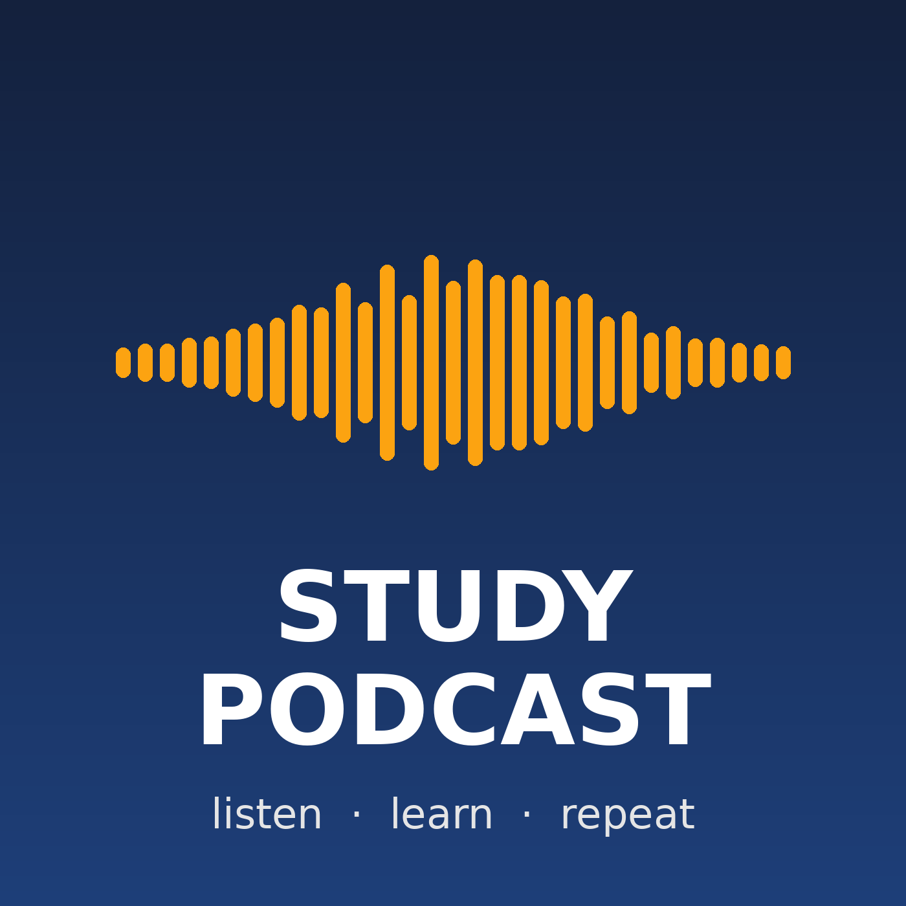

Study Podcast
Subscribe in a podcast app
On your phone, tap Open in AntennaPod. Or in AntennaPod tap Add podcast → Add podcast by RSS address and paste the feed URL above.
Loading episodes…

On your phone, tap Open in AntennaPod. Or in AntennaPod tap Add podcast → Add podcast by RSS address and paste the feed URL above.
Loading episodes…